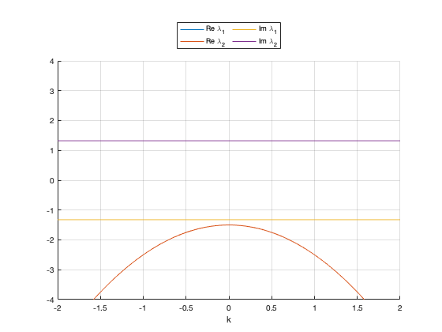
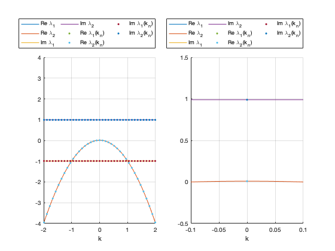

Questions 1-4
See attached pdf
Contents
Question 5
We plot the curves for the real and imaginary parts of  , when
, when  ,
,  . From the plot we see that the eigenvalues are purely real, that the dispersion curve has a maximum at
. From the plot we see that the eigenvalues are purely real, that the dispersion curve has a maximum at  , and that the real part of the eigenvalue is always negative, confirming that the steady state is linearly stable. It can be verified that the the curves for real parts of the eigenvalues are given by the parabola found in the answer to Question 4.
, and that the real part of the eigenvalue is always negative, confirming that the steady state is linearly stable. It can be verified that the the curves for real parts of the eigenvalues are given by the parabola found in the answer to Question 4.
% Clearm clear all, close all, clc % Trace, determinant, and eigenvaalues function handles tau = @(b,d,k) -(1+d)*k.^2+ (1-b^2); delta = @(b,d,k) d*k.^4+(b^2-d)*k.^2 + b^2; lambda1 = @(b,d,k) (tau(b,d,k)-sqrt(tau(b,d,k).^2 - 4*delta(b,d,k)))/2; lambda2 = @(b,d,k) (tau(b,d,k)+sqrt(tau(b,d,k).^2 - 4*delta(b,d,k)))/2; rel1 = @(b,d,k) real(lambda1(b,d,k)); rel2 = @(b,d,k) real(lambda2(b,d,k)); imag1 = @(b,d,k) imag(lambda1(b,d,k)); imag2 = @(b,d,k) imag(lambda2(b,d,k)); % Set parameters for Hopf bifurcation p = [2 1]; b = p(1); d = p(2); % Continuous variable k k = linspace(-2,2,1000); % Plot dispersion relation (with inset around k=0); figure, hold on; plot(k,rel1(b,d,k),'DisplayName','Re \lambda_1'); plot(k,rel2(b,d,k),'DisplayName','Re \lambda_2'); plot(k,imag1(b,d,k),'DisplayName','Im \lambda_1'); plot(k,imag2(b,d,k),'DisplayName','Im \lambda_2'); hold off; grid on; ylim([-4 4]); xlabel('k'); lgd = legend; lgd.Location = 'northoutside'; lgd.NumColumns = 3; drawnow;
Question 6
See attached pdf
Question 7
For these parameter values the steady state is unstable to perturbations with . We show also an inset of the plot, from which we see that the state is close to a Hopf bifurcation
% Set parameters for Hopf bifurcation p = [0.99 1]; b = p(1); d = p(2); % Vector for the real variable k k = linspace(-2,2,1000); L = 30; kn = [-19:19]*pi/L; % Plot dispersion relation (with inset around k=0); figure; subplot(1,2,1), hold on; plot(k,rel1(b,d,k),'DisplayName','Re \lambda_1'); plot(k,rel2(b,d,k),'DisplayName','Re \lambda_2'); plot(k,imag1(b,d,k),'DisplayName','Im \lambda_1'); plot(k,imag2(b,d,k),'DisplayName','Im \lambda_2'); plot(kn,rel1(b,d,kn),'.','DisplayName','Re \lambda_1(k_n)'); plot(kn,rel2(b,d,kn),'.','DisplayName','Re \lambda_2(k_n)'); plot(kn,imag1(b,d,kn),'.','DisplayName','Im \lambda_1(k_n)'); plot(kn,imag2(b,d,kn),'.','DisplayName','Im \lambda_2(k_n)'); hold off; grid on; ylim([-4 4]); xlabel('k'); lgd = legend; lgd.Location = 'northoutside'; lgd.NumColumns = 3; subplot(1,2,2), hold on; plot(k,rel1(b,d,k),'DisplayName','Re \lambda_1'); plot(k,rel2(b,d,k),'DisplayName','Re \lambda_2'); plot(k,imag1(b,d,k),'DisplayName','Im \lambda_1'); plot(k,imag2(b,d,k),'DisplayName','Im \lambda_2'); plot(kn,rel1(b,d,kn),'.','DisplayName','Re \lambda_1(k_n)'); plot(kn,rel2(b,d,kn),'.','DisplayName','Re \lambda_2(k_n)'); plot(kn,imag1(b,d,kn),'.','DisplayName','Im \lambda_1(k_n)'); plot(kn,imag2(b,d,kn),'.','DisplayName','Im \lambda_2(k_n)'); hold off; grid on; xlim([-0.1 0.1]); ylim([-0.5 1.5]); xlabel('k'); lgd = legend; lgd.Location = 'northoutside'; lgd.NumColumns = 3; % Instantiating periodic differentiation matrix nx = 1500; [x,~,Dxx] = PeriodicDiffMat([-L,L],nx); % Initial condition (steady state + perburbation) e = ones(size(x)); z0 = [p(1)*e; e/p(1)]; z0 = z0 + 0.01*[sin(2*pi/10*x); sin(2*pi/20*x)]; % Time step rhs = @(t,z) Schnakenberg(z,p,Dxx); jac = @(t,z) SchnakenbergJacobian(z,p,Dxx); opts = odeset('Jacobian',jac); tSpan = [0:0.1:300]; [t,ZHist] = ode15s(rhs,tSpan,z0,opts); % Space-time plot PlotHistory(x,t,ZHist,p,[]);
We display the most unstable eigenvalue  , at , and approximate the period of the emerging periodic solution using the formula
, at , and approximate the period of the emerging periodic solution using the formula  . We then run a simulation for
. We then run a simulation for ![$t \in [0,10T]$](driver_eq00084620761167863474.png) . There are various ways to extract the period of the oscillations. Here we extract and plot
. There are various ways to extract the period of the oscillations. Here we extract and plot  . Rather than using the peaks of , we pproximate the periods using the peaks of the autocorrelation function which is also
. Rather than using the peaks of , we pproximate the periods using the peaks of the autocorrelation function which is also  -periodic, but more robust.
-periodic, but more robust.
% Fetch eigenvalue lambdaC = lambda1(b,d,0); omegaC = abs(imag(lambdaC)); T = 2*pi/omegaC; fprintf('Parameters: b = %f, d = %f\n',p(1),p(2)); fprintf('Critical eigenvalue: lambda = %f + %fi\n',real(lambdaC),imag(lambdaC)); fprintf('Predicted frequency: omega = %f\n',omegaC); fprintf('Predicted period: T = %f\n',T); % Perform a simulation for 10 periods. dt = 0.001; tSpan = [0:dt:10*T]; [t,ZHist] = ode15s(rhs,tSpan,ZHist(end,:)',opts); % Plot u at x=0, as a function of $t$. uHist = ZHist(:,nHalf); figure; nHalf = nx/2; plot(t,uHist,'.-'); xlabel('t'); ylabel('u(0,t)'); % Use autocorrelation to extract the period (other was are also possible) autocorr = xcorr(uHist,uHist); [~,locs] = findpeaks(uHist); TSim = mean(diff(locs)*dt); fprintf('Estimated period from simulation: T = %f\n',TSim);
Parameters: b = 0.990000, d = 1.000000 Critical eigenvalue: lambda = 0.009950 + -0.989950i Predicted frequency: omega = 0.989950 Predicted period: T = 6.346972
Unrecognized function or variable 'nHalf'. Error in driver (line 110) uHist = ZHist(:,nHalf);
Question 9
We now show the curves of eigenvalues. In addition to the eigenvalues as functions of  , we also plot the curves as functions of the discrete wavenumbers
, we also plot the curves as functions of the discrete wavenumbers  . The steady states is unstable to perturbations with wavelengths
. The steady states is unstable to perturbations with wavelengths  . The most unstable eigenmode has wavelength
. The most unstable eigenmode has wavelength  .
.
% Set parameters for Turing bifurcation p = [2 30]; b = p(1); d = p(2); % Continuous and discrete wavenumbers k = linspace(-2,2,1000); L = 30; kn = [-19:19]*pi/L; % Plot dispersion relation (with inset around k=0); figure; subplot(1,2,1), hold on; plot(k,rel1(b,d,k),'DisplayName','Re \lambda_1'); plot(k,rel2(b,d,k),'DisplayName','Re \lambda_2'); plot(k,imag1(b,d,k),'DisplayName','Im \lambda_1'); plot(k,imag2(b,d,k),'DisplayName','Im \lambda_2'); plot(kn,rel1(b,d,kn),'.','DisplayName','Re \lambda_1(k_n)'); plot(kn,rel2(b,d,kn),'.','DisplayName','Re \lambda_2(k_n)'); plot(kn,imag1(b,d,kn),'.','DisplayName','Im \lambda_1(k_n)'); plot(kn,imag2(b,d,kn),'.','DisplayName','Im \lambda_2(k_n)'); hold off; grid on; ylim([-4 4]); xlabel('k'); lgd = legend; lgd.Location = 'northoutside'; lgd.NumColumns = 3; subplot(1,2,2), hold on; plot(k,rel1(b,d,k),'DisplayName','Re \lambda_1'); plot(k,rel2(b,d,k),'DisplayName','Re \lambda_2'); plot(k,imag1(b,d,k),'DisplayName','Im \lambda_1'); plot(k,imag2(b,d,k),'DisplayName','Im \lambda_2'); plot(kn,rel1(b,d,kn),'.','DisplayName','Re \lambda_1(k_n)'); plot(kn,rel2(b,d,kn),'.','DisplayName','Re \lambda_2(k_n)'); plot(kn,imag1(b,d,kn),'.','DisplayName','Im \lambda_1(k_n)'); plot(kn,imag2(b,d,kn),'.','DisplayName','Im \lambda_2(k_n)'); hold off; grid on; xlim([-1 1]); ylim([-1.5 1.5]); xlabel('k'); lgd = legend; lgd.Location = 'northoutside'; lgd.NumColumns = 3;
Question 10
Perturbing initial conditions with a spatially-periodic function with wavelength $  , we obseve a Turing pattern emerging with
, we obseve a Turing pattern emerging with  peaks, as expected.
peaks, as expected.
% Instantiating periodic differentiation matrix nx = 1500; [x,~,Dxx] = PeriodicDiffMat([-L,L],nx); % Initial condition (steady state + perburbation) e = ones(size(x)); z0 = [p(1)*e; e/p(1)]; % z0 = z0 + 0.01*[sin(2*pi/10*x); sin(2*pi/20*x)]; z0 = z0 + 0.0001*[cos(6*pi/L*x); cos(6*pi/L*x)]; % Time step rhs = @(t,z) Schnakenberg(z,p,Dxx); jac = @(t,z) SchnakenbergJacobian(z,p,Dxx); opts = odeset('Jacobian',jac); tSpan = [0:0.1:300]; [t,ZHist] = ode15s(rhs,tSpan,z0,opts); % Space-time plot PlotHistory(x,t,ZHist,p,[]); % Plot final state figure; title('Final state'); plot(x,ZHist(end,1:nx),x,ZHist(end,nx+1:2*nx)); xlabel('x'); legend({'U','V'});